O fim da Guerra Fria nos anos 80 e 90
64 imagens, na ordem em que aparecem no texto. A imagem grande de cada cartão é a que está no arquivo da autora. Quando foi possível localizá-la na internet, a versão encontrada aparece ao lado, na caixa cinza, com a licença e o link da fonte — 13 são a mesma imagem, 3 apenas parecidas, 48 não têm fonte de licença livre. Onde há substituta proposta, o cartão remete ao número dela em Sugeridas. Arquivos em Imagens/U11/atuais.
Verde: domínio público ou CC0, uso livre. Laranja: Creative Commons BY ou BY-SA, uso permitido com crédito ao autor na legenda. Vermelho: licença não livre ou não identificada — não usar sem autorização. Clique na miniatura para abrir a página do arquivo e conferir a licença.
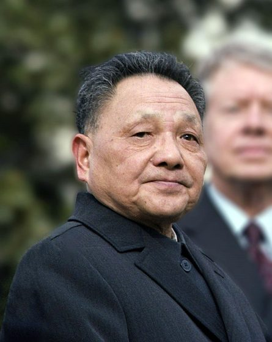
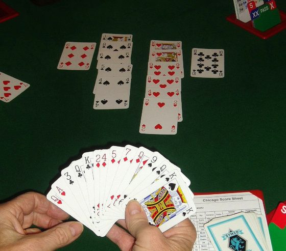
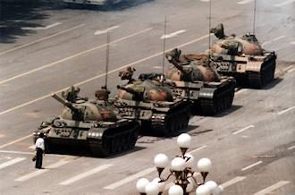
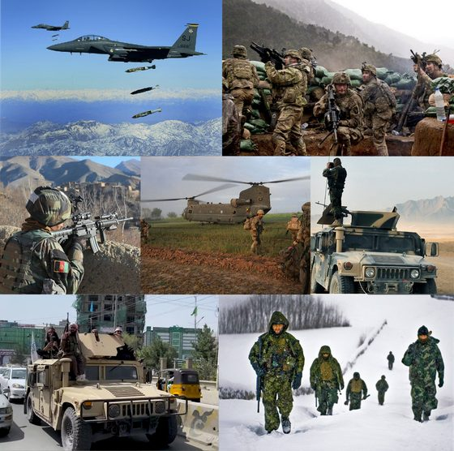
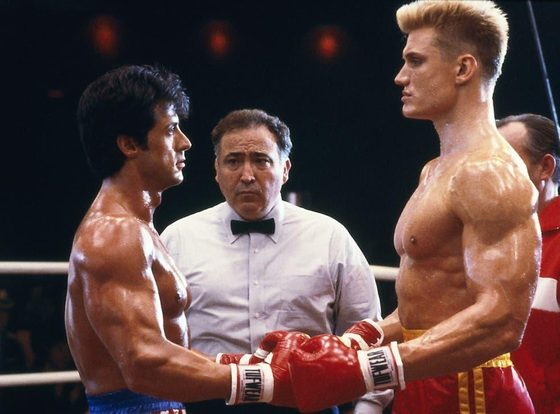
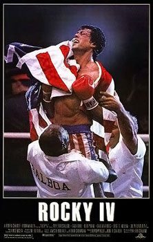
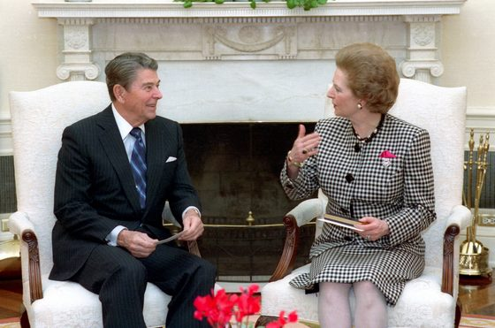
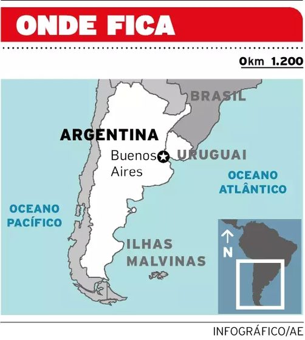
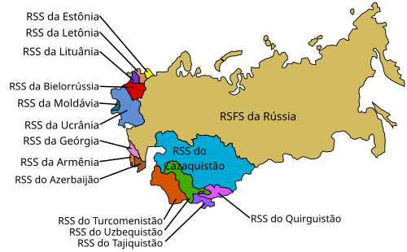
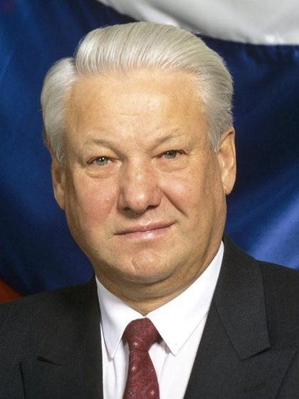
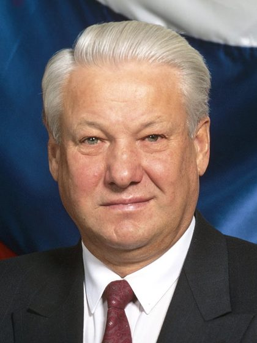
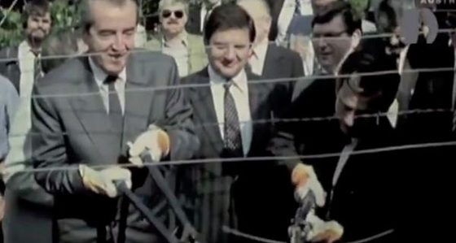
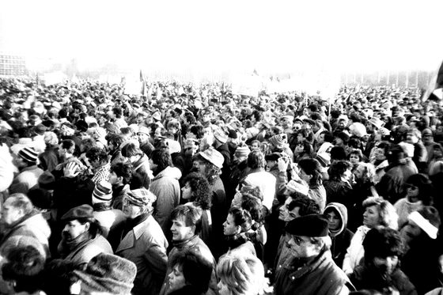
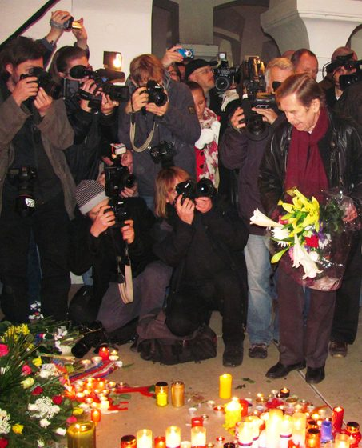
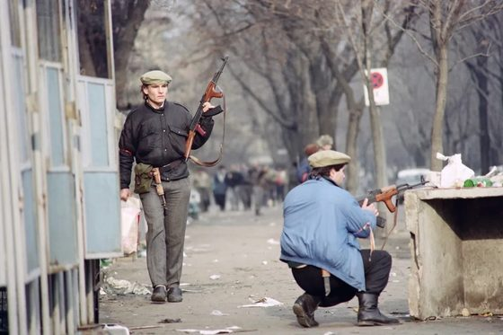
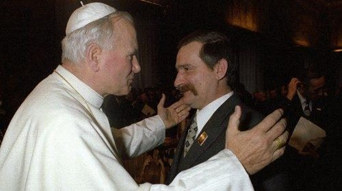
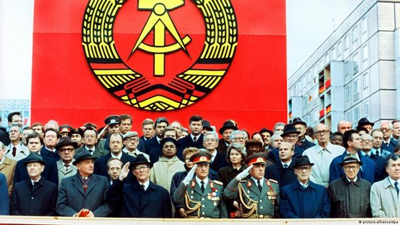
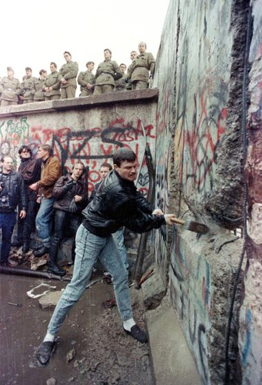
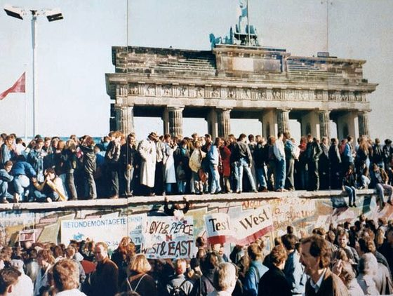
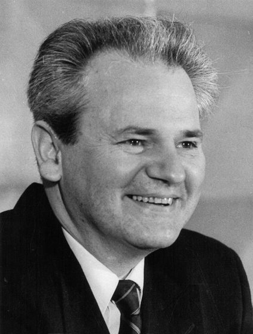
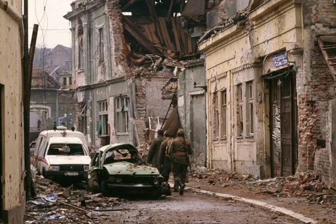
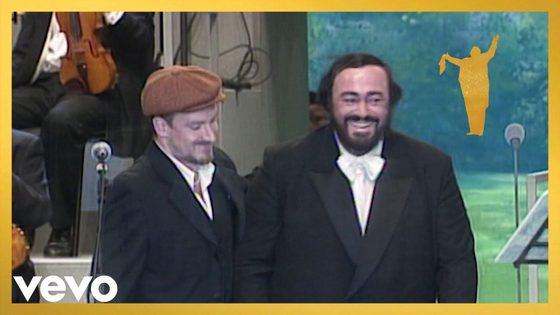
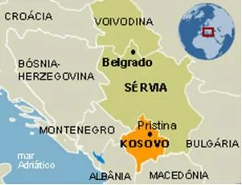
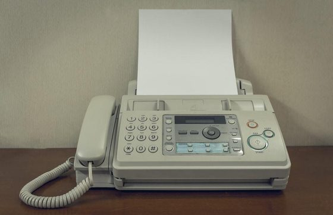
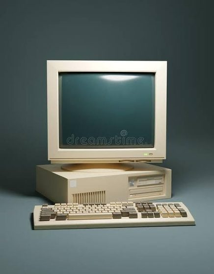
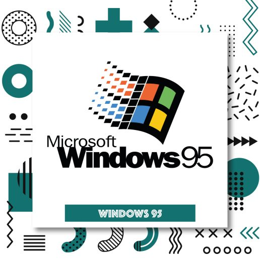
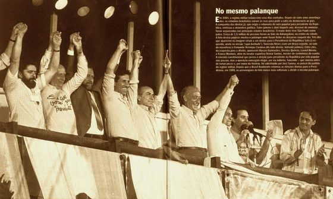
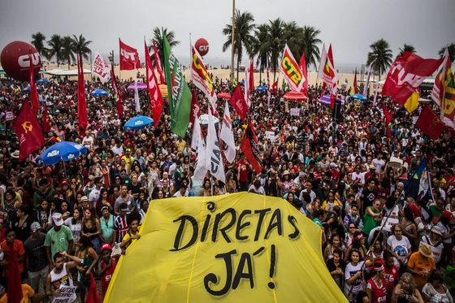
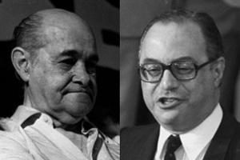
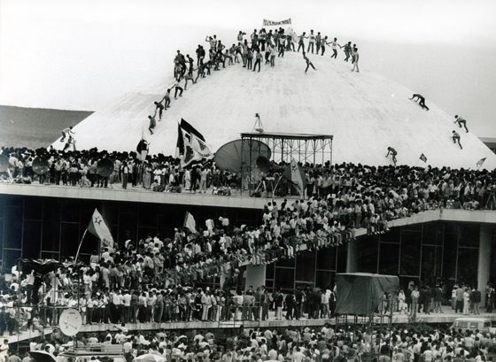
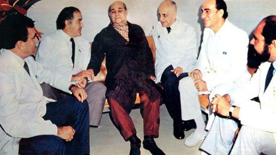
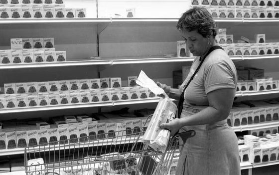
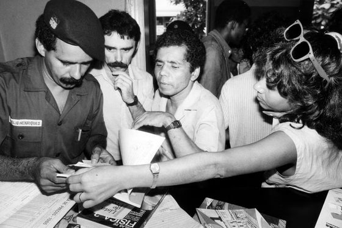
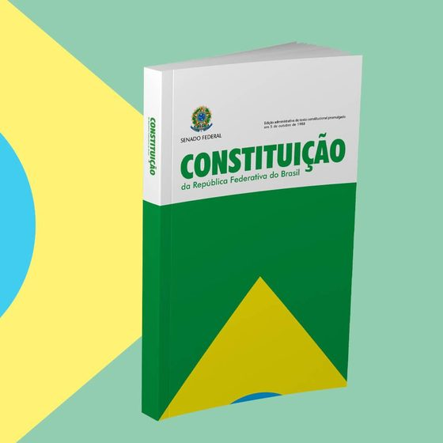
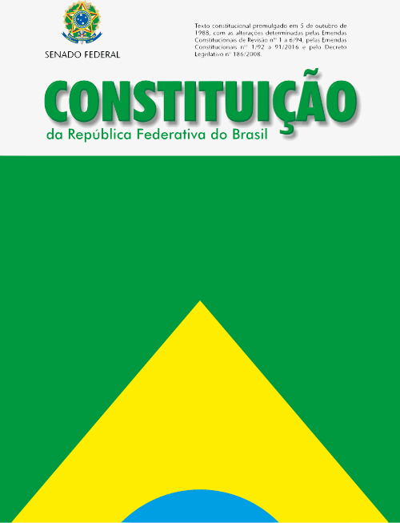
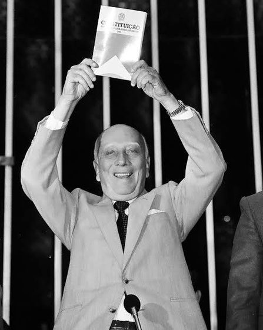
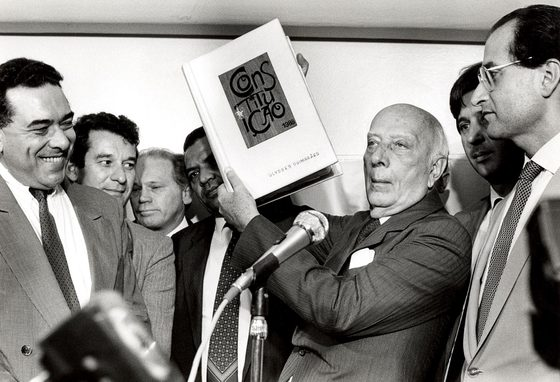
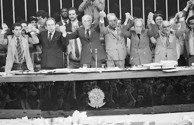
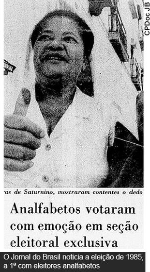
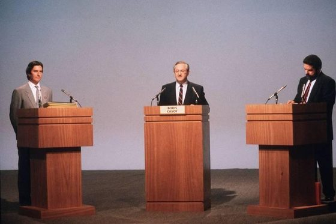
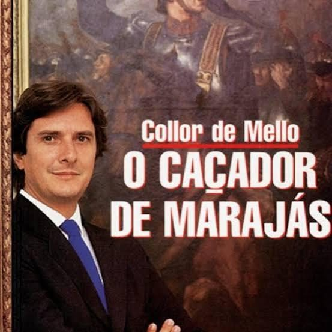
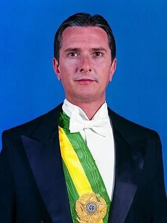
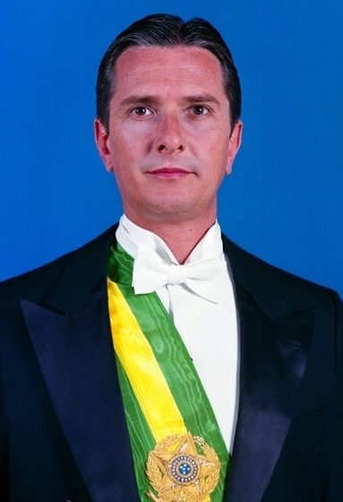
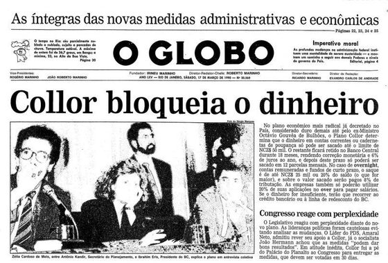
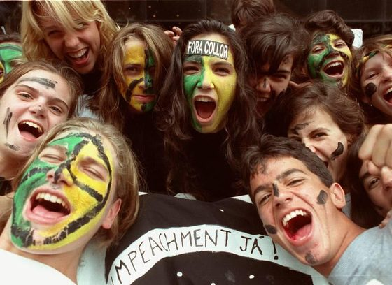
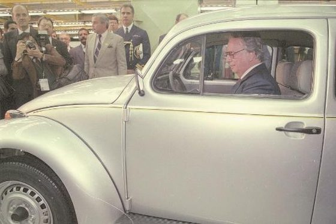
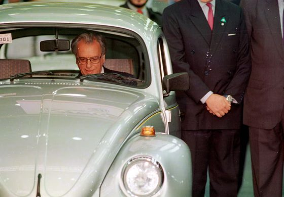
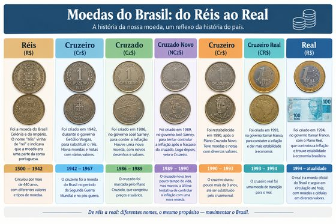
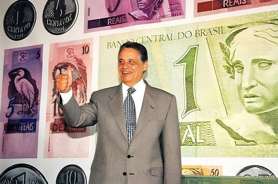
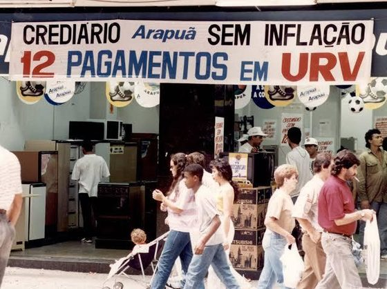